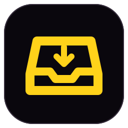

Fabric InboxWelcome to Fabric Inbox
Your mail and your project addresses in one place. Fabric Inbox runs on a small server in your own Cloudflare account: mail is received and kept there, and this app is your window onto it.
What is the server?
A small program in your Cloudflare account that receives mail for your domains, keeps it and sends your replies. Only you can open it: Cloudflare emails you a sign-in code. You can also run it yourself from the Fabric Inbox source and enter its address here.
Create your server on Cloudflare
Fabric Inbox runs in your own Cloudflare account. The app creates everything it needs there; your mail stays in your account.
This copy of the app carries no server to create. Download the app again, or enter the address of a server you run.
1. Give the app a Cloudflare token
- and sign in, or create a free account.
- Choose Create Token, then Create Custom Token, and name it “Fabric Inbox”.
- Add each permission below. Under Account Resources choose your account; under Zone Resources choose All zones.
- Choose Continue to summary, Create Token, and copy the token.
| Type | Permission | Access |
|---|
It is saved as a secret on your new server, which uses it to manage your domains. This Mac does not keep it.
2. Who signs in
This account already has a Fabric Inbox server. It will be updated; its mail and settings are kept.
Only this address can open your server. Each time you sign in, Cloudflare emails a code to it.
Your server will be at fabric-inbox.name.workers.dev. Letters, digits and dashes; one per Cloudflare account.
You will sign in at name.cloudflareaccess.com.
Creating your server…
Your server is ready. Sign in with the code Cloudflare emails you; then add your domains on Settings → Domains.
Review the setup
- Setup
- Server
- Sign-in
Stays as it is
What happens next
- Fabric Inbox opens your server. Sign in with the code Cloudflare emails you; it stays inside the app.
- The addresses above are created on the server. Nothing answers them until you choose an agent.
- Where an address forwarded to Gmail, a copy keeps going there once its mail is routed to the server.
Connect to your server
Use the address where your Fabric Inbox server runs, for example https://inbox.example.com.
Mail needs a network connection in this version; there is no offline mailbox yet.